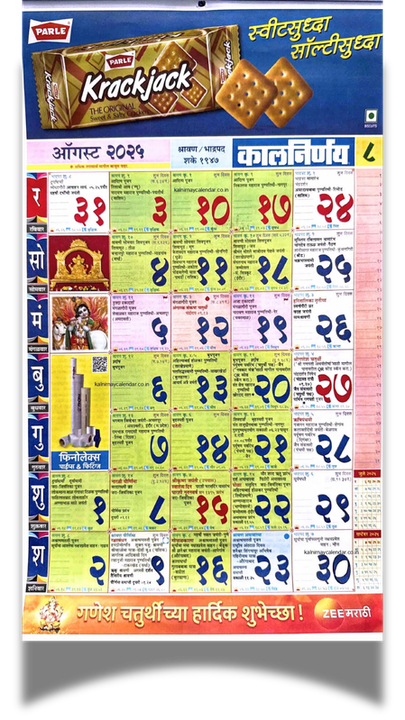
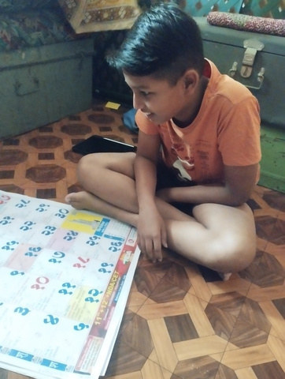
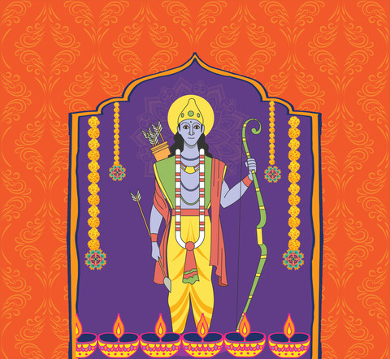
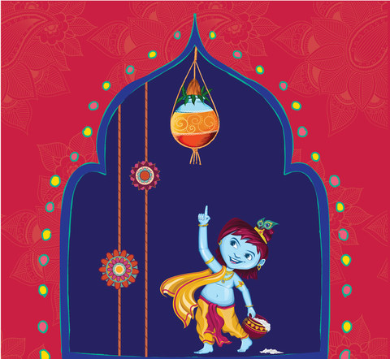
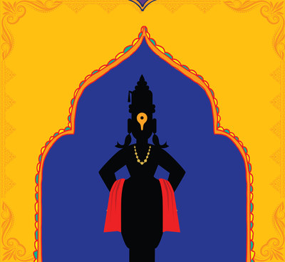
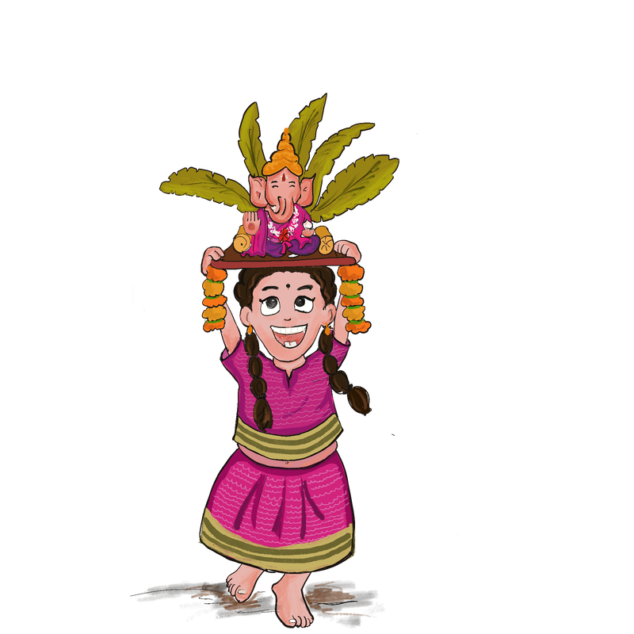
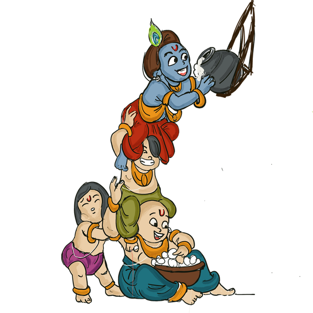
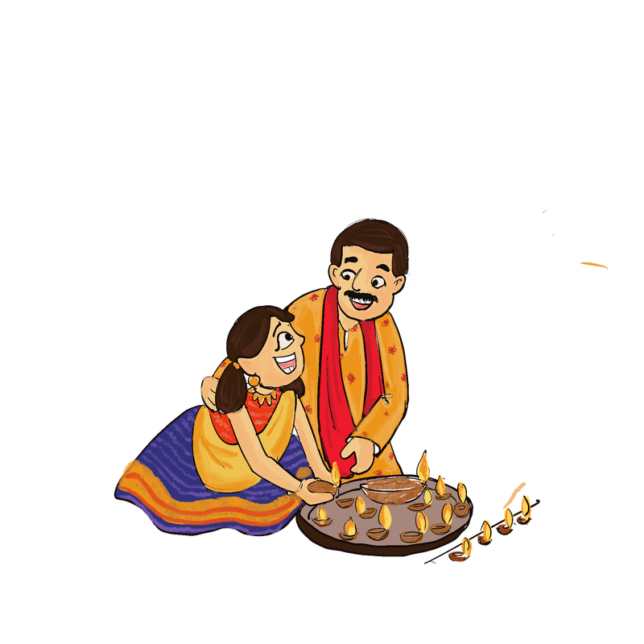
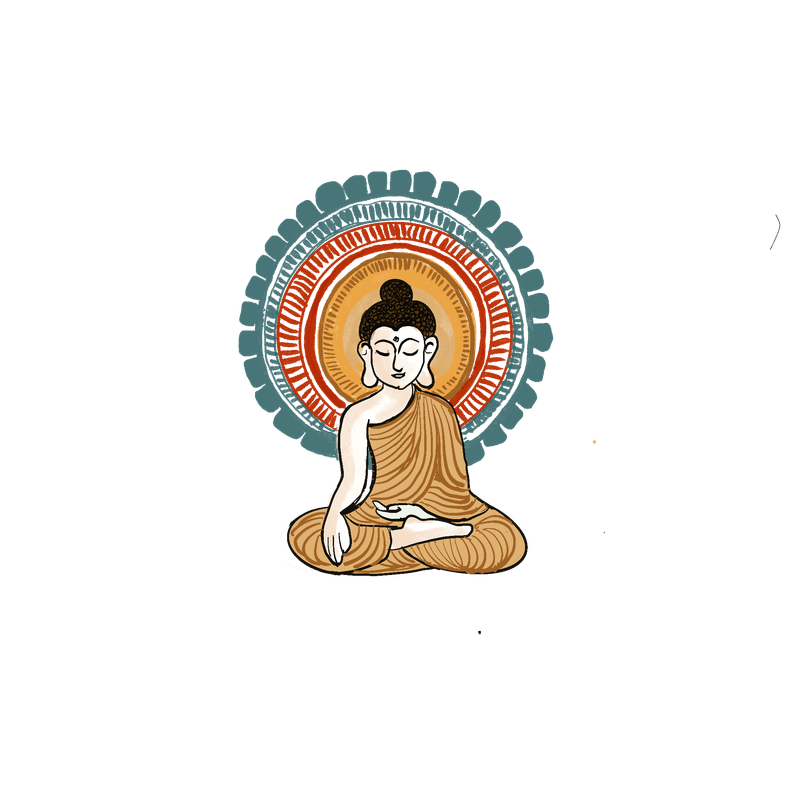
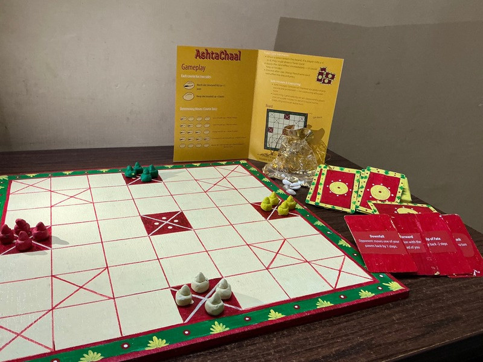

Elders
Grandparents and family elders
- Actively use the Panchang daily for planning poojas, festivals and rituals.
- Have deep knowledge, passed down orally.
- Believe this knowledge is “slowly dying with our generation.”
PlaygroundTithi
A desk calendar that presents the Marathi lunar month, with its tithis, festivals and significant days, plus an AR layer that brings the stories behind them to life.
“Mavshi, when is Diwali this year?”
My nephewI replied with the English date, then realised I had no idea which Hindu month or tithi it fell on. Like many today, we know our festivals by their Gregorian dates, but Indian festivals follow the Panchang, a traditional lunisolar calendar.
This project tries to make it simple and engaging to track the current Hindu month and year.
A Hindu calendar for 1871-72, Rajasthan (Library of Congress)
Follows the Earth's revolution around the Sun. A solar calendar is based only on the annual cycle of the sun.
A blend of solar and lunar systems, with 12 lunar months based on the Moon's orbit around Earth. 12 lunar months make 354 days, 8 hours and 48 minutes.
The waxing Moon is called Shukla Paksha and the waning Moon Krushna Paksha. Each paksha is half a lunar cycle and has 15 tithis, or lunar days. Try it:
Ashtami
To explore how people connect (or disconnect) with the traditional Hindu calendar, I had casual interviews and conversations with people across different age groups.
Elders
Middle aged
Young adults
Calendars like Kalnirnay are widely used at home, but they are not designed for today's generation. They follow the Gregorian format and add tithi and festival names in small text.
When I asked my teenage nephew what day it was by the Marathi lunar calendar, he looked at the Kalnirnay but couldn't figure it out.
kru kay aahe?
pratipada kay aste??
kiti complex aahe he
aaj pn drutiya udya pn drutiya ase kase


Gen Z and kids find it hard to understand the Indian calendar, which is rooted in both solar and lunar cycles. The tithi-based structure, month names like Ashwin, Shravan or Chaitra, and the reasons behind shifting festival dates feel confusing and far from their daily lives.
A culturally rooted, visually engaging desk calendar for the Marathi lunar panchang, with marker-based AR, so younger people can connect with traditions through both a physical and a digital layer.



What didn't work:
Custom illustrations inspired by traditional Indian art with a modern twist: festivals, rituals and seasons, characters from daily life and stories, in friendly colors.




The Marathi lunar months in a simpler, culturally rich format. Each page has clear tithi markings, key festivals and an illustration.
Each month has an AR marker. Scanning it shows the major festival of that month with three things:
Next fun project
AshtaChaal
Chowka Bara revived with Ganjifa strategy cards
